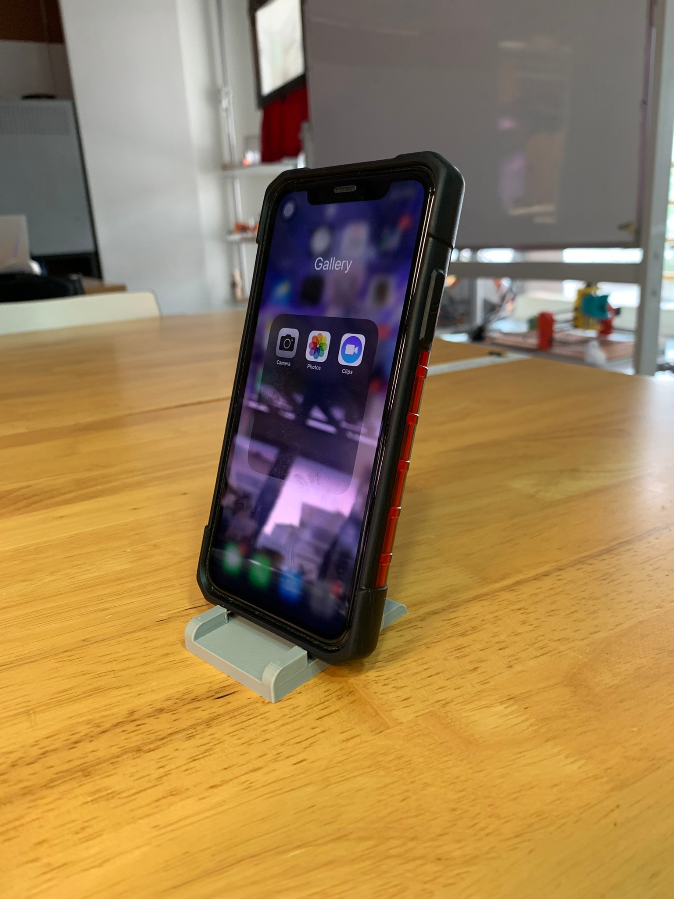

Week 1 - Fablab Safety
This week I learned basic safety in SP FabLab such as PPE and safety practices.
Week 2 (and 3) - HTML, CSS, and version control
On week 2 I made a basic HTML site and hosted it on Github pages.
I also learned some CSS, which allowed me to make the website look like this:
In week 3, I took the time to touch up on the site a little bit with more knowledge on how the div element works.
Week 4 - Computer-aided design (CAD)
This week, I worked with CAD software to produce images with Inkscape and GIMP, as well as modelling with Fusion 360.
Here's some things I did:


You can find more information about this on the "Projects/Assignments" page.
Week 5 - More computer-aided design (CAD)
This week, I did more exercise on fusion 360.
This is a few of the models I created this week:
More projects can be seen on the "Projects/Assignments" page.
Additionally, I did some cleanup on the github website to make it easier for me to work on the files.
Finally, I added extra navigation to the "projects/Assignments" page.
Week 6&7 - Phone stand
On weeks 6&7, I completed a 3d-printed phone stand design and printed it.
More info on the projects/assignments page.
Week 8 - Laser cutting
This week was exam week, but nevertheless I took the laser cutter evaluation to use the laser cutter which will be required for future projects.
Holiday (week 9-11)
Over the holiday, I worked on designing the laser-cut accessories box.
Week 12-14 - completing the accessories box
I cut out and assembled the accessories box, and also started thinking about what to do for the final project.

Week 15-16 - Electronics and embedded programming
These weeks, we learned about electronics and embedded programming
For more information, go to the Electronics and programming section of my projects/assignments page.
Week 17-20 - Final project
In the final weeks, I worked on my final project: A digital clock.

Details in the Final project page.